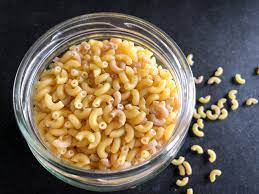

Coquilletes

Description
Ce sont les pâtes préférées des enfants mais les plus grands les aiment beaucoup aussi, surtout lorsqu'elles sont gratinées avec du fromage fondant sur toute leur surface. On parle bien entendu des coquillettes, ces petites pâtes à base de farine de blé dur et d'œufs et à la forme légèrement courbée.
Ingredients
- 280g De Coquillettes.
- 800g D’Eau.
- 1 Cube De Volaille / 1 Cube De Légumes.
- 250g De Crème Fraîche Liquide.
- 100g De Parmesan Râpé..
- 1 Belle Pincée De Poivre.
- 200g De Dès De Jambon De Porc / Poulet / Dinde.
- 1 Noix De Beurre.
- 1 Gousse D’Ail.
Steps
- Épluchez et émincez la gousse d’ail.
- Réservez.
- Dans une casserole, versez l’eau avec le bouillon.
- Faire chauffer sur feu moyen.
- Mélangez pour qu’il fonde.
- Pendant ce temps, dans une grande poêle, faire fondre le beurre, sur feu moyen.
- Ajoutez la gousse d’ail émincée.
- Versez les coquillettes.
- Bien les enrober de beurre.
- Quand le bouillon est prêt, versez l’équivalent d’une louche sur les coquillettes.
- Mélangez.
- Laissez les pâtes absorbez tout le liquide.
- Ajoutez une autre louche de bouillon.
- Il faut toujours, à chaque ajout, qu’il soit absorbé par les pâtes.
- Continuez jusqu’à avoir mis tout le bouillon.
- Mettre à feu doux
- Versez la crème fraîche liquide, le fromage et le jambon émincé.
- Poivrez.
- Goûtez, afin de rectifier l’assaisonnement, si besoin.
- Bien mélanger, jusqu’à obtenir un risotto bien crémeux.
- Servir aussitôt.